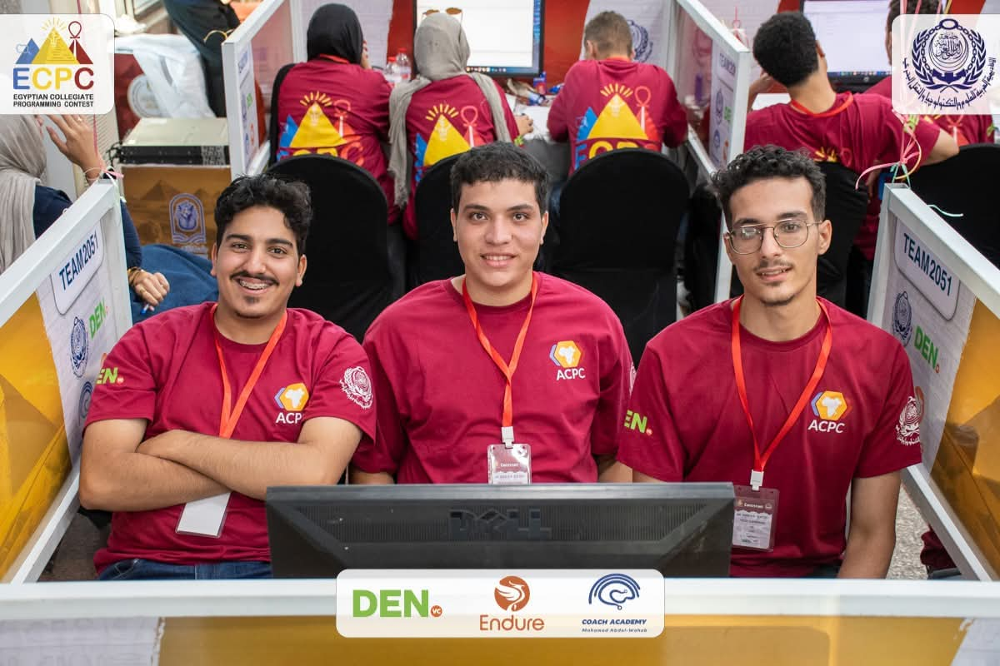

Horus University — Egypt • ICPC HUE Community
04 / Field Experience
Approximately one month prior to ECPC qualification, ICPC HUE conducted rigorous reviews of advanced data structures, completed official collegiate registration, and organized travel logistics.
Challenging official problem set.
Baseline reached by majority.
Within 1 single problem of National Finals.

In our rookie season debut, Horus University solved 4 complex algorithmic problems under official contest conditions — finishing literally within 1 problem of qualifying for the prestigious ECPC National Finals. Competing against established national institutions with multi-year programs, this achievement serves as undeniable proof that the ICPC HUE curriculum, instructor pedagogy, and training methodology work. Most importantly, it transforms national qualification from an abstract aspiration into an immediate, measurable reality: by initiating 5-hour timed simulations months earlier (detailed on Page 14), achieving official National Qualification in the 2026/2027 season is highly probable.